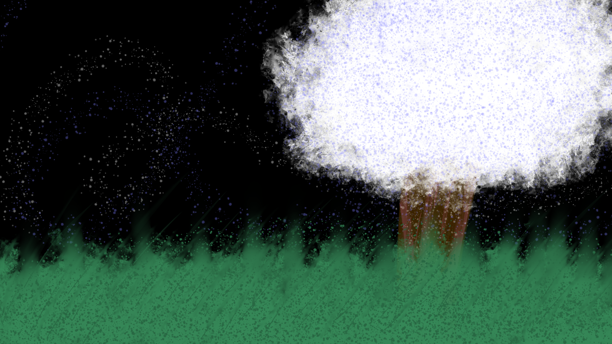

what is this?

the scene looks beautiful, if the window pane wasn't in the way you'd jump thru it... though it seems that the memory is fading

the scene looks beautiful, if the window pane wasn't in the way you'd jump thru it... though it seems that the memory is fading